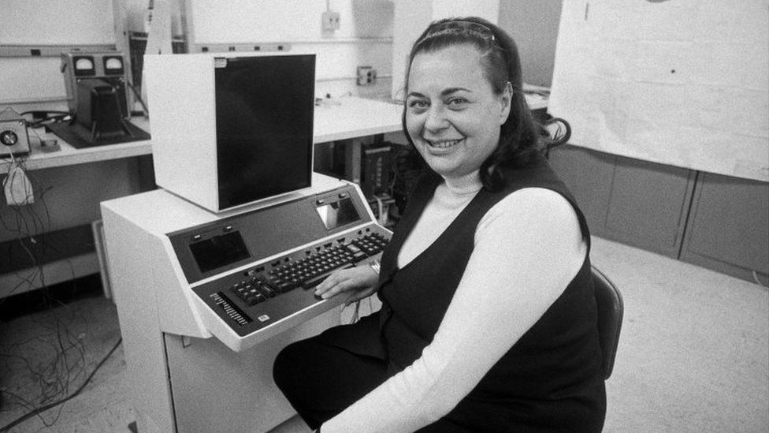
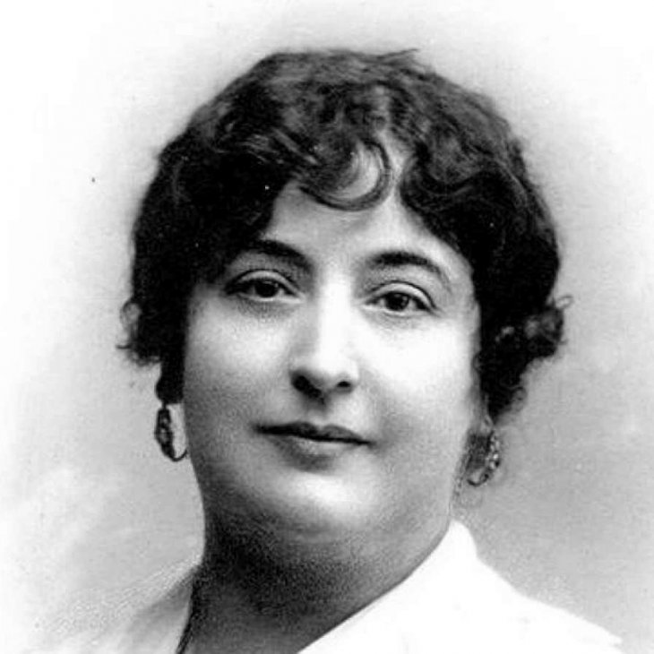

ADA LOVELACE

Augusta Ada King, condesa de Lovelace (Londres, 10 de diciembre de 1815-íd., 27 de noviembre de 1852), registrada al nacer como Augusta Ada Byron y conocida habitualmente como Ada Lovelace.
Fue una matemática, informática y escritora británica, célebre sobre todo por su trabajo acerca de la calculadora de uso general de Charles Babbage, la denominada máquina analítica.
Entre sus notas sobre la máquina, se encuentra lo que se reconoce hoy como el primer algoritmo destinado a ser procesado por una máquina, por lo que se la considera como la primera programadora de ordenadores
EVELIN BEREZIN
Fue una pionera informática, aunque pocos conozcan su nombre, quien creó el primer sistema digital para escribir y editar texto. Evelyn Berezin, quien falleció este mes en Nueva York a la edad de 93 años, es considerada la creadora del primer procesador de textos para ordenado Berezin fue a la Universidad de Nueva York con la intención de graduarse en Empresariales hasta que recibió una oferta de trabajo y le pidieron cambiar su campo de estudio a la física. Finalmente se graduó en 1945 en física y en 1946 recibió una beca de la Comisión de Energía Atómica de los Estados Unidos para realizar estudios de postgrado en la misma Universidad de Nueva York. En 1951 aceptó un trabajo en la Electronic Computer Corporation (Elecom) en Brooklyn como diseñadora de ordenadores. Tras la compra de Electronic Computer Corporation por parte de Underwood Corporation y su conversión en la Elecom Division, Berezin se convirtió en la jefa del departamento de diseño de lógica.
CARMEN DE BURGOS
Carmen de Burgos y Seguí (Almería, 10 de diciembre de 1867-Madrid, 9 de octubre de 1932) fue una periodista, escritora, traductora y activista de los derechos de la mujer española perteneciente a la Edad de Plata.
Conocida como Colombine, también firmó con otros seudónimos como «Gabriel Luna», «Perico el de los Palotes», «Raquel», «Honorine» o «Marianela».
Perteneció a la generación del 98 y se la considera la primera periodista profesional en España y en lengua castellana por su condición de redactora del madrileño Diario Universal. También está considerada como la primera corresponsal de guerra.